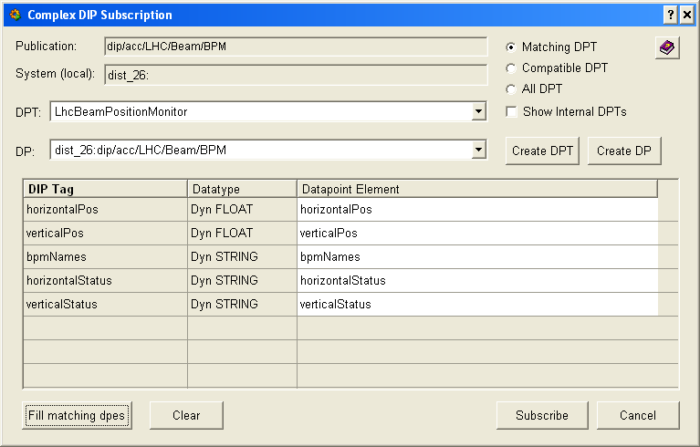

| Panel Name |
fwDipEditDptCreate.pnl |
|
| Introduction |
This panel is used to subscribe to complex DIP publications. It allows to
specify the matching of the dpes and the DIP tags, create new DPT and
create the instances of given DPTs.
The panel contains the mechanisms to perform the type chcecking between DIP types and dpe types. |
|
| Instructions |
The central section of the panel is filled with a table which shows the
structure of the publication. The table has following columns:
The upper part of the panel is devoted to selection and creation of DPTs and DPs. Here follows the description of the elements:
Clicking on any row in the table will pop up the panel in which one can manually select which dpe will be used for subscribing to given field. Changing the DPT will clear the entries in the "Datapoint Element" The bottom part of the panel contains the buttons:
|
|
| Restrictions | To update the list of current configuration data points,
you must manually press the "Refresh" button. This is important to
ensure that you are viewing the latest information. |
|
|

|
| Dollar Parameters | ||
| Name | Description | |
| $sConfigDp | Contains the DIP API Manager config DP - which is needed to execute a DIP query. | Required |
| $sDipPublicationName | The name of the DIP publication that we want to subscribe to. | Required |